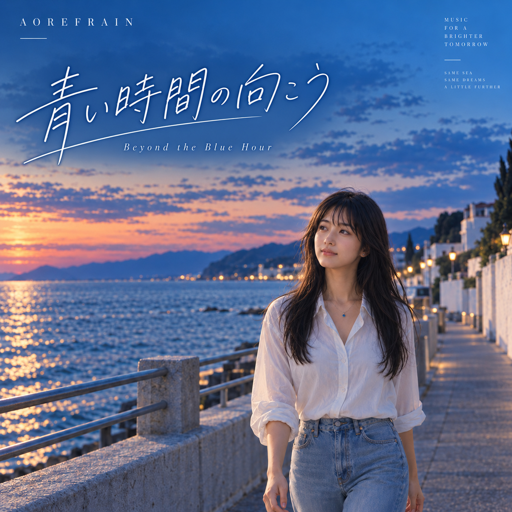

Latest Release

青い時間の向こう
Beyond the Blue Hour
Debut single by AOREFRAIN.
A bittersweet Japanese city-pop inspired song about driving along the coast while carrying memories of a past summer.
Release date: October 11, 2026
About AOREFRAIN
AOREFRAIN is an independent music project from Japan.
The project combines original Japanese lyrics, music production, visual storytelling, and the character Nagi / 凪 to create a consistent world centered around nostalgic “blue memories.”
Music and visuals are created with AI-assisted tools under human creative direction. Concept, lyrics, selection, editing, visual direction, and final quality control are handled by AOREFRAIN.
Official Links
Spotify and Apple Music links can be added after the artist pages are live.
Contact
For Spotify for Artists verification, keep the AOREFRAIN name and your contact email visible on this page.